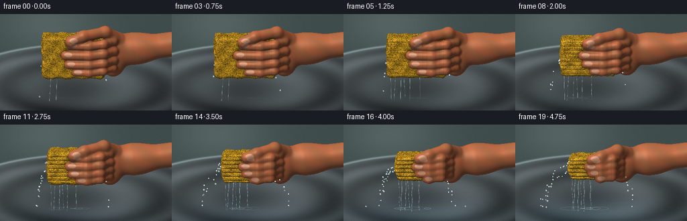
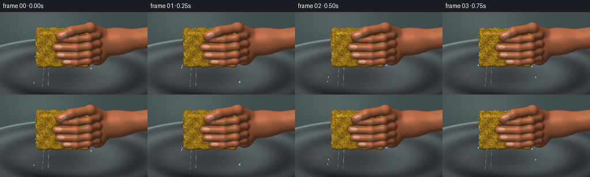
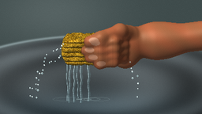

CODING AGENTS AS PIXEL WORLD MODELS
traex/GPT-6.1-Sol · phygen_011
点击播放 · 原生 RGB 像素
逐轮保存的候选
回放视频、检查图与代码变化。
每份候选均可单独播放。实际图片检查记录在下方工具轨迹中。
候选 01播放与检查图
点击播放 · 原生 RGB 像素


展开代码变化
--- 上一保存版本
+++ 本次保存版本
@@ -0,0 +1,284 @@
+import os, json, math
+from pathlib import Path
+import numpy as np
+from PIL import Image, ImageDraw, ImageFilter
+import artifact_io
+
+ROOT=Path(__file__).resolve().parent
+W,H=384,216
+rng=np.random.default_rng(22)
+
+def norm(v): return v/np.maximum(np.linalg.norm(v,axis=-1,keepdims=True),1e-8)
+def smoothmin(a,b,k=.16):
+ h=np.maximum(k-np.abs(a-b),0)/k
+ return np.minimum(a,b)-h*h*k*.25
+
+def foamtex():
+ sz=1024
+ yy,xx=np.mgrid[:sz,:sz]
+ n=rng.normal(0,1,(sz,sz))
+ base=np.empty((sz,sz,3),np.float32)
+ c=2*np.sin(xx*.028)*np.sin(yy*.038)+n*3
+ base[:]=np.array([227,173,37]); base+=c[...,None]
+ im=Image.fromarray(np.uint8(np.clip(base,0,255)))
+ d=ImageDraw.Draw(im)
+ for i in range(18000):
+ x,y=rng.integers(0,sz,2); r=rng.choice([1,2,3,4,5,7,10],p=[.27,.26,.20,.14,.08,.04,.01]); ry=r*rng.uniform(.55,1.3)
+ shade=int(rng.uniform(0,35))
+ d.ellipse((x-r-1,y-ry-1,x+r+1,y+ry+1),fill=(239-shade//2,189-shade//2,54))
+ d.ellipse((x-r,y-ry,x+r,y+ry),fill=(150+shade,100+shade,13+shade//3))
+ d.ellipse((x-r*.7,y-ry*.8,x+r*.65,y+ry*.4),fill=(119+shade,78+shade,13))
+ if r>3: d.arc((x-r,y-ry,x+r,y+ry),15,165,fill=(255,212,74),width=1)
+ return np.asarray(im).astype(np.float32)/255
+TEX=foamtex()
+
+def sample_texture(u,v):
+ ix=np.floor(u*370).astype(int)%1024; iy=np.floor(v*370).astype(int)%1024
+ return TEX[iy,ix]
+
+# Orthographic macro camera. A slight downward angle shows the top and the wet basin.
+cam=np.array([0.,1.05,7.8],np.float32)
+fwd=norm(np.array([0.,-.17,-1.],np.float32)); right=np.array([1.,0,0]); up=np.cross(right,fwd)
+xx,yy=np.meshgrid((np.arange(W)+.5-W/2)*6.5/W,(H/2-np.arange(H)-.5)*6.5/W)
+orig=cam+xx[...,None]*right+yy[...,None]*up
+D=np.broadcast_to(fwd,orig.shape).reshape(-1,3)
+O=orig.reshape(-1,3)
+
+def project(p):
+ p=np.asarray(p); dv=p-cam
+ return np.stack([W/2+dv@right*W/6.5,H/2-dv@up*W/6.5],-1)
+
+def capsule(p,a,b,r):
+ a=np.asarray(a); b=np.asarray(b); v=b-a
+ t=np.clip((p-a)@v/(v@v),0,1)
+ return np.sqrt(np.sum((p-a-t[:,None]*v)**2,axis=1))-r
+
+def ellip(p,c,r):
+ q=p-np.asarray(c); r=np.asarray(r)
+ k0=np.linalg.norm(q/r,axis=1);k1=np.linalg.norm(q/(r*r),axis=1)
+ return k0*(k0-1)/np.maximum(k1,1e-6)
+
+class Scene:
+ def __init__(self,t):
+ # Accelerating squeeze; the sponge remains tightly compressed at the end.
+ self.c=(min(t/.91,1))**1.7
+ c=self.c
+ self.center=np.array([-.48,-.02,0.])
+ self.sx=1.18*(1-.40*c); self.sy=.80*(1-.48*c); self.sz=.63*(1+.15*c)
+ self.fingers=[]; self.nails=[]
+ # Four curled fingers across the front: distinct lengths and joints.
+ ys=np.array([.50,.13,-.23,-.54])*(1-.35*c)
+ ends=[-.58,-.77,-.66,-.40]
+ for j,y in enumerate(ys):
+ end=ends[j]+.30*c
+ rr=[.155,.171,.158,.132][j]
+ zfront=self.sz+.085-.065*c
+ pts=[(1.15-.33*c,y+.06,-.18),(1.02-.33*c,y+.07,.28),(.66-.24*c,y+.025,zfront-.015),(.12-.15*c,y-.03,zfront+.055),(end,y-.03,zfront-.055)]
+ for a,b in zip(pts[:-1],pts[1:]):self.fingers.append((a,b,rr))
+ # Fingernails follow the distal phalanges and are partly visible.
+ self.nails.append((np.array([end+.105,y+.017,zfront+.077]),np.array([.155,.093,.032])))
+ # Opposable thumb arches over the exposed upper-left corner.
+ self.thumb=[((1.20-.26*c,.59-.12*c,-.05),(.73-.12*c,.94-.30*c,.38),.23),((.73-.12*c,.94-.30*c,.38),(-.11+.10*c,.85-.37*c,.77),.205),((-.11+.10*c,.85-.37*c,.77),(-.59+.23*c,.64-.29*c,.78),.19)]
+ self.nails.append((np.array([-.46+.23*c,.71-.29*c,.94]),np.array([.165,.105,.032])))
+ def sponge(self,p):
+ q=p-self.center
+ # Slight bulging and wrinkling as the porous block collapses.
+ x=q[:,0]; y=q[:,1]; z=q[:,2]
+ wave=.020*np.sin(10*x+3*y)*np.sin(12*y+4*z)+.008*np.sin(29*x+19*y+7*z)
+ bulge=1+.08*self.c*np.cos(y/self.sy*2.4)
+ sx=self.sx*bulge
+ # Indented wet folds along the fingers, strongest late in the squeeze.
+ indent=self.c*.050*(np.cos(y*21)**6)*np.clip(z/self.sz,0,1)
+ b=np.stack([np.abs(x)-sx+.12,np.abs(y)-self.sy+.12,np.abs(z)-(self.sz-indent)+.12],-1)
+ return np.linalg.norm(np.maximum(b,0),axis=1)+np.minimum(np.max(b,axis=1),0)-.12+wave
+ def skin(self,p):
+ c=self.c
+ d=ellip(p,[1.03-.25*c,.03,-.17],[.55,.88*(1-.20*c),.46])
+ d=smoothmin(d,ellip(p,[1.80,.20,-.33],[.88,.59,.43]),.3)
+ d=smoothmin(d,capsule(p,[1.8,.18,-.33],[3.95,.43,-.44],.47),.3)
+ for a,b,r in self.fingers+self.thumb:d=smoothmin(d,capsule(p,a,b,r),.11)
+ return d
+ def distances(self,p):
+ s=self.sponge(p); h=self.skin(p)
+ return np.minimum(s,h),np.where(s<h,0,1)
+
+# Stainless-steel sink backdrop with a softly defocused elliptical rim.
+def backdrop(t,c):
+ y,x=np.mgrid[:H,:W]; X=x/W;Y=y/H
+ el=((X-.48)/.66)**2+((Y-.76)/.39)**2
+ base=np.zeros((H,W,3),np.float32)
+ base[:]=[.25,.30,.30]
+ g=.09*np.exp(-((X-.27)**2+(Y-.1)**2)/.09)
+ base+=g[...,None]
+ inner=np.clip(1.5-el,0,1)
+ bowl=.22+.24*(1-Y)+.055*np.sin(el*10)+.04*np.cos(X*9)
+ steel=np.stack([bowl*.9,bowl*.98,bowl*1.01],-1)
+ blend=np.clip((1.4-el)*4,0,1)
+ base=base*(1-blend[...,None])+steel*blend[...,None]
+ rim=np.exp(-((el-1.33)/.043)**2)*.31
+ base+=rim[...,None]*np.array([.89,.98,1.])
+ # Wet reflective bottom, a little deeper as the sponge drains.
+ pool=np.exp(-(((X-.43)/.46)**2+((Y-.95)/.16)**2))*c
+ base+=pool[...,None]*np.array([.06,.10,.12])
+ base+=rng.normal(0,.0015,(H,W,1))
+ im=Image.fromarray(np.uint8(np.clip(base,0,1)*255)).filter(ImageFilter.GaussianBlur(1.1))
+ return np.asarray(im).astype(np.float32)/255
+
+light=norm(np.array([-3.,5.,6.])); half=norm(light-fwd)
+
+def render(t):
+ sc=Scene(t); bg=backdrop(t,sc.c); rgb=bg.reshape(-1,3).copy()
+ N=W*H; depth=np.full(N,100.,np.float32); mat=np.zeros(N,int)
+ # Sphere tracing our mathematical geometry, with early-out for the uncluttered backdrop.
+ ids=np.flatnonzero((xx.reshape(-1)>-2.15)&(yy.reshape(-1)>-1.52)&(yy.reshape(-1)<1.55))
+ ds=np.full(len(ids),5.6,np.float32)
+ for k in range(105):
+ p=O[ids]+D[ids]*ds[:,None]
+ sd,ma=sc.distances(p)
+ hit=sd<.0018
+ depth[ids[hit]]=ds[hit];mat[ids[hit]]=ma[hit]
+ keep=(~hit)&(ds<9.3)
+ ids=ids[keep];ds=ds[keep]+np.maximum(sd[keep]*.88,.0015)
+ if len(ids)==0:break
+ ids=np.flatnonzero(depth<20);p=O[ids]+D[ids]*depth[ids,None];ma=mat[ids]
+ eps=.003
+ ns=[]
+ for axis in range(3):
+ v=np.zeros(3);v[axis]=eps
+ ns.append(sc.distances(p+v)[0]-sc.distances(p-v)[0])
+ n=norm(np.stack(ns,-1))
+ diffuse=np.maximum(n@light,0)
+ amb=.34+.15*np.maximum(n[:,1],0)
+ # Subtle local occlusion around curved fingers and contact points.
+ occ=np.ones(len(p))
+ for step,weight in [(.045,.18),(.12,.22)]:
+ sd=sc.distances(p+n*step)[0]
+ occ-=np.clip((step-sd)/step,0,1)*weight
+ col=np.zeros_like(p)
+ sponge=ma==0; skin=ma==1
+ if np.any(sponge):
+ q=p[sponge]-sc.center; nn=n[sponge]
+ axis=np.argmax(np.abs(nn),axis=1)
+ u=np.where(axis==0,q[:,2],q[:,0]/(1-.40*sc.c))
+ v=np.where(axis==1,q[:,2],q[:,1]/(1-.48*sc.c))
+ tex=sample_texture(u+1.5,v+1.2)
+ # Wet sponge darkens, while tiny wet cell walls catch the light.
+ col[sponge]=tex*(.87+.06*sc.c)
+ if np.any(skin):
+ q=p[skin]; nn=n[skin]
+ base=np.tile([.69,.407,.265],(len(q),1))
+ freckles=np.sin(q[:,0]*83+q[:,1]*47)*np.sin(q[:,1]*119-q[:,2]*51)*.006
+ base+=freckles[:,None]
+ red=.028*np.sin(q[:,0]*6+q[:,1]*8)
+ base[:,0]+=red
+ # Fine flexion creases concentrated over finger joints.
+ creases=np.zeros(len(q))
+ for a,b,r in sc.fingers:
+ yy0=a[1]
+ near=np.exp(-((q[:,1]-yy0)/(r*.74))**6)*np.clip((q[:,2]-.52)*5,0,1)
+ line=np.exp(-(np.sin((q[:,0]-.22)*20)/.18)**2)
+ creases=np.maximum(creases,near*line*.10)
+ base*=1-creases[:,None]
+ # Pearly pink fingernails on the front of the distal fingers.
+ nail=np.zeros(len(q)); nailborder=np.zeros(len(q))
+ for cc,rr in sc.nails:
+ delta=(q-cc)/rr
+ a=delta[:,0]**2+delta[:,1]**2
+ f=np.clip((1-a)*12,0,1)*np.clip((q[:,2]-cc[2]+.05)*30,0,1)
+ nail=np.maximum(nail,f)
+ nailborder=np.maximum(nailborder,np.exp(-((a-.96)/.09)**2)*f)
+ base=base*(1-nail[:,None])+np.array([.78,.56,.44])*nail[:,None]
+ base-=nailborder[:,None]*.055
+ col[skin]=base
+ spec=np.maximum(n@half,0)**32
+ lighting=amb+.67*diffuse
+ # Warm translucent edge response for skin, fine glints on wet sponge.
+ col=col*lighting[:,None]*occ[:,None]
+ col[skin]+=np.array([.085,.026,.012])*(np.maximum(0,1-diffuse[skin])*.4)[:,None]
+ col+=spec[:,None]*np.where(skin,.11,.065)[:,None]
+ # Soft reflected cool light from the sink.
+ col+=np.clip(-n[:,1],0,1)[:,None]*np.array([.025,.037,.04])
+ rgb[ids]=np.clip(col,0,1)
+ rgb=rgb.reshape(H,W,3)
+ return rgb,sc,depth.reshape(H,W)
+
+# Transparent water: refractive ribbons, bright narrow glints and ballistic droplets.
+def water(rgb,sc,t,depth):
+ im=Image.fromarray(np.uint8(np.clip(rgb,0,1)*255)).convert('RGB')
+ # Ripples at the foot of the draining streams are rendered beneath the streams.
+ draw=ImageDraw.Draw(im,'RGBA')
+ strength=.10+.90*sc.c
+ for k in range(6):
+ age=(t*2.7+k*.17)%1
+ center=project([-.6+(k-2.5)*.21,-1.53,.70])
+ rx=4+age*(15+15*sc.c);ry=rx*.15
+ draw.ellipse((center[0]-rx,center[1]-ry,center[0]+rx,center[1]+ry),outline=(184,214,214,int(85*(1-age)*strength)),width=1)
+ rgb=np.asarray(im).astype(np.float32)/255
+ out=rgb.copy()
+ # Downward streams are attached to exposed bottom and side foam, not the hand.
+ origins=[(-.85,-.96,.66),(-.62,-1.,.53),(-.27,-1.,.70),(.12,-1.,.40),(-1.05,-.52,.39),(-.52,-1.,-.13)]
+ for k,(x,y,z) in enumerate(origins):
+ x=sc.center[0]+x*sc.sx/1.18
+ y=sc.center[1]+(y+.2)*sc.sy/.8
+ count=92
+ fall=np.linspace(0,1,count)
+ world=np.empty((count,3));world[:,0]=x+(k-2.5)*.022*fall+np.sin(fall*13-t*18+k)*.014*strength
+ world[:,1]=y-fall*(y+1.64);world[:,2]=z+.035*np.sin(fall*8+t*5+k)
+ pp=project(world)
+ thick=(.40+2.0*strength)*(1 if k<4 else .60)
+ if k>1 and sc.c<.07:continue
+ # Tube-cross-section shading: refracted background, shadow edge, silver center.
+ for i,pt in enumerate(pp):
+ radius=thick*(.92-.33*fall[i])*(.85+.15*np.sin(fall[i]*36-t*18+k))
+ cx,cy=pt; xi=int(cx);yi=int(cy)
+ rad=max(1,int(math.ceil(radius+1)))
+ if yi<0 or yi>=H:continue
+ for dx in range(-rad,rad+1):
+ X=xi+dx
+ if X<1 or X>=W-1:continue
+ u=(X-cx)/max(radius,.7)
+ if abs(u)>1:continue
+ wp=world[i]; dep=np.dot(wp-cam,fwd)
+ if depth[yi,X]<dep-.025:continue
+ src=int(np.clip(X+u*2.5,0,W-1))
+ alpha=.68*(1-u*u)**.3
+ color=rgb[yi,src]*.68+np.array([.13,.17,.18])
+ glint=np.exp(-((u+.38)/.18)**2)*.46
+ color+=glint*np.array([.9,1,1])
+ out[yi,X]=out[yi,X]*(1-alpha)+np.clip(color,0,1)*alpha
+ im=Image.fromarray(np.uint8(np.clip(out,0,1)*255))
+ draw=ImageDraw.Draw(im,'RGBA')
+ # Ejected droplets: coherent trajectories, gravity, and larger spray under pressure.
+ for k in range(70):
+ start=(k*.137)%1
+ age=(t*3.0-start)%1
+ if k>int(8+60*sc.c):continue
+ side=-1 if k%3 else 1
+ sx=sc.center[0]+side*sc.sx*.92
+ sy=-.10+(k%5)*.09
+ vel=(.2+.85*sc.c)*(1+(k%7)*.12)
+ pos=np.array([sx+side*vel*age,sy-.20*age-2.75*age*age,.32+.17*np.sin(k)])
+ if pos[1]<-1.7:continue
+ px,py=project(pos)
+ dep=np.dot(pos-cam,fwd)
+ xi,yi=int(px),int(py)
+ if 0<=xi<W and 0<=yi<H and depth[yi,xi]<dep:continue
+ r=.65+(k%4)*.19
+ draw.ellipse((px-r,py-r*1.25,px+r,py+r*1.25),fill=(110,153,158,145),outline=(211,236,236,180))
+ draw.ellipse((px-r*.55,py-r*.8,px,py-r*.1),fill=(250,255,252,230))
+ return np.asarray(im)
+
+def main():
+ frames=[]
+ for i in range(20):
+ t=i/19
+ rgb,sc,depth=render(t)
+ frame=water(rgb,sc,t,depth)
+ # A consistent subtle photographic grain; antialiasing at final RGB resolution.
+ im=Image.fromarray(frame).resize((256,144),Image.Resampling.LANCZOS)
+ a=np.asarray(im).astype(np.float32)
+ a+=np.random.default_rng(888).normal(0,.48,a.shape[:2])[...,None]
+ frames.append(np.uint8(np.clip(a,0,255)))
+ print('rendered',i,flush=True)
+ artifact_io.save(np.stack(frames),ROOT)
+if __name__=='__main__':main()
候选 02播放与检查图
点击播放 · 原生 RGB 像素

展开代码变化
--- 上一保存版本
+++ 本次保存版本
@@ -33,7 +33,7 @@
TEX=foamtex()
def sample_texture(u,v):
- ix=np.floor(u*370).astype(int)%1024; iy=np.floor(v*370).astype(int)%1024
+ ix=np.floor(u*270).astype(int)%1024; iy=np.floor(v*270).astype(int)%1024
return TEX[iy,ix]
# Orthographic macro camera. A slight downward angle shows the top and the wet basin.
@@ -225,7 +225,7 @@
world=np.empty((count,3));world[:,0]=x+(k-2.5)*.022*fall+np.sin(fall*13-t*18+k)*.014*strength
world[:,1]=y-fall*(y+1.64);world[:,2]=z+.035*np.sin(fall*8+t*5+k)
pp=project(world)
- thick=(.40+2.0*strength)*(1 if k<4 else .60)
+ thick=(.38+3.7*strength)*(1 if k<4 else .65)
if k>1 and sc.c<.07:continue
# Tube-cross-section shading: refracted background, shadow edge, silver center.
for i,pt in enumerate(pp):
@@ -242,8 +242,8 @@
if depth[yi,X]<dep-.025:continue
src=int(np.clip(X+u*2.5,0,W-1))
alpha=.68*(1-u*u)**.3
- color=rgb[yi,src]*.68+np.array([.13,.17,.18])
- glint=np.exp(-((u+.38)/.18)**2)*.46
+ color=rgb[yi,src]*.62+np.array([.16,.21,.22])
+ glint=np.exp(-((u+.38)/.20)**2)*.57
color+=glint*np.array([.9,1,1])
out[yi,X]=out[yi,X]*(1-alpha)+np.clip(color,0,1)*alpha
im=Image.fromarray(np.uint8(np.clip(out,0,1)*255))
候选 03播放与检查图
可观测工具轨迹
实际执行的命令与返回图片。
命令 1exit 0
/bin/bash -lc 'ls -la && cat prompt.txt && cat GENERATION_RULES.md && cat task_spec.json'
命令 2exit 0
/bin/bash -lc "cat artifact_io.py && python - <<'PY'
import numpy, PIL
print('numpy and PIL available')
PY"命令 3exit 0
/bin/bash -lc "cat > generate.py <<'PY'
import os, json, math
from pathlib import Path
import numpy as np
from PIL import Image, ImageDraw, ImageFilter
import artifact_io
ROOT=Path(__file__).resolve().parent
W,H=384,216
rng=np.random.default_rng(22)
def norm(v): return v/np.maximum(np.linalg.norm(v,axis=-1,keepdims=True),1e-8)
def smoothmin(a,b,k=.16):
h=np.maximum(k-np.abs(a-b),0)/k
return np.minimum(a,b)-h*h*k*.25
def foamtex():
sz=1024
yy,xx=np.mgrid[:sz,:sz]
n=rng.normal(0,1,(sz,sz))
base=np.empty((sz,sz,3),np.float32)
c=2*np.sin(xx*.028)*np.sin(yy*.038)+n*3
base[:]=np.array([227,173,37]); base+=c[...,None]
im=Image.fromarray(np.uint8(np.clip(base,0,255)))
d=ImageDraw.Draw(im)
for i in range(18000):
x,y=rng.integers(0,sz,2); r=rng.choice([1,2,3,4,5,7,10],p=[.27,.26,.20,.14,.08,.04,.01]); ry=r*rng.uniform(.55,1.3)
shade=int(rng.uniform(0,35))
d.ellipse((x-r-1,y-ry-1,x+r+1,y+ry+1),fill=(239-shade//2,189-shade//2,54))
d.ellipse((x-r,y-ry,x+r,y+ry),fill=(150+shade,100+shade,13+shade//3))
d.ellipse((x-r*.7,y-ry*.8,x+r*.65,y+ry*.4),fill=(119+shade,78+shade,13))
if r>3: d.arc((x-r,y-ry,x+r,y+ry),15,165,fill=(255,212,74),width=1)
return np.asarray(im).astype(np.float32)/255
TEX=foamtex()
def sample_texture(u,v):
ix=np.floor(u*370).astype(int)%1024; iy=np.floor(v*370).astype(int)%1024
return TEX[iy,ix]
# Orthographic macro camera. A slight downward angle shows the top and the wet basin.
cam=np.array([0.,1.05,7.8],np.float32)
fwd=norm(np.array([0.,-.17,-1.],np.float32)); right=np.array([1.,0,0]); up=np.cross(right,fwd)
xx,yy=np.meshgrid((np.arange(W)+.5-W/2)*6.5/W,(H/2-np.arange(H)-.5)*6.5/W)
orig=cam+xx[...,None]*right+yy[...,None]*up
D=np.broadcast_to(fwd,orig.shape).reshape(-1,3)
O=orig.reshape(-1,3)
def project(p):
p=np.asarray(p); dv=p-cam
return np.stack([W/2+dv@right*W/6.5,H/2-dv@up*W/6.5],-1)
def capsule(p,a,b,r):
a=np.asarray(a); b=np.asarray(b); v=b-a
t=np.clip((p-a)@v/(v@v),0,1)
return np.sqrt(np.sum((p-a-t[:,None]*v)**2,axis=1))-r
def ellip(p,c,r):
q=p-np.asarray(c); r=np.asarray(r)
k0=np.linalg.norm(q/r,axis=1);k1=np.linalg.norm(q/(r*r),axis=1)
return k0*(k0-1)/np.maximum(k1,1e-6)
class Scene:
def __init__(self,t):
# Accelerating squeeze; the sponge remains tightly compressed at the end.
self.c=(min(t/.91,1))**1.7
c=self.c
self.center=np.array([-.48,-.02,0.])
self.sx=1.18*(1-.40*c); self.sy=.80*(1-.48*c); self.sz=.63*(1+.15*c)
self.fingers=[]; self.nails=[]
# Four curled fingers across the front: distinct lengths and joints.
ys=np.array([.50,.13,-.23,-.54])*(1-.35*c)
ends=[-.58,-.77,-.66,-.40]
for j,y in enumerate(ys):
end=ends[j]+.30*c
rr=[.155,.171,.158,.132][j]
zfront=self.sz+.085-.065*c
pts=[(1.15-.33*c,y+.06,-.18),(1.02-.33*c,y+.07,.28),(.66-.24*c,y+.025,zfront-.015),(.12-.15*c,y-.03,zfront+.055),(end,y-.03,zfront-.055)]
for a,b in zip(pts[:-1],pts[1:]):self.fingers.append((a,b,rr))
# Fingernails follow the distal phalanges and are partly visible.
self.nails.append((np.array([end+.105,y+.017,zfront+.077]),np.array([.155,.093,.032])))
# Opposable thumb arches over the exposed upper-left corner.
self.thumb=[((1.20-.26*c,.59-.12*c,-.05),(.73-.12*c,.94-.30*c,.38),.23),((.73-.12*c,.94-.30*c,.38),(-.11+.10*c,.85-.37*c,.77),.205),((-.11+.10*c,.85-.37*c,.77),(-.59+.23*c,.64-.29*c,.78),.19)]
self.nails.append((np.array([-.46+.23*c,.71-.29*c,.94]),np.array([.165,.105,.032])))
def sponge(self,p):
q=p-self.center
# Slight bulging and wrinkling as the porous block collapses.
x=q[:,0]; y=q[:,1]; z=q[:,2]
wave=.020*np.sin(10*x+3*y)*np.sin(12*y+4*z)+.008*np.sin(29*x+19*y+7*z)
bulge=1+.08*self.c*np.cos(y/self.sy*2.4)
sx=self.sx*bulge
# Indented wet folds along the fingers, strongest late in the squeeze.
indent=self.c*.050*(np.cos(y*21)**6)*np.clip(z/self.sz,0,1)
b=np.stack([np.abs(x)-sx+.12,np.abs(y)-self.sy+.12,np.abs(z)-(self.sz-indent)+.12],-1)
return np.linalg.norm(np.maximum(b,0),axis=1)+np.minimum(np.max(b,axis=1),0)-.12+wave
def skin(self,p):
c=self.c
d=ellip(p,[1.03-.25*c,.03,-.17],[.55,.88*(1-.20*c),.46])
d=smoothmin(d,ellip(p,[1.80,.20,-.33],[.88,.59,.43]),.3)
d=smoothmin(d,capsule(p,[1.8,.18,-.33],[3.95,.43,-.44],.47),.3)
for a,b,r in self.fingers+self.thumb:d=smoothmin(d,capsule(p,a,b,r),.11)
return d
def distances(self,p):
s=self.sponge(p); h=self.skin(p)
return np.minimum(s,h),np.where(s<h,0,1)
# Stainless-steel sink backdrop with a softly defocused elliptical rim.
def backdrop(t,c):
y,x=np.mgrid[:H,:W]; X=x/W;Y=y/H
el=((X-.48)/.66)**2+((Y-.76)/.39)**2
base=np.zeros((H,W,3),np.float32)
base[:]=[.25,.30,.30]
g=.09*np.exp(-((X-.27)**2+(Y-.1)**2)/.09)
base+=g[...,None]
inner=np.clip(1.5-el,0,1)
bowl=.22+.24*(1-Y)+.055*np.sin(el*10)+.04*np.cos(X*9)
steel=np.stack([bowl*.9,bowl*.98,bowl*1.01],-1)
blend=np.clip((1.4-el)*4,0,1)
base=base*(1-blend[...,None])+steel*blend[...,None]
rim=np.exp(-((el-1.33)/.043)**2)*.31
base+=rim[...,None]*np.array([.89,.98,1.])
# Wet reflective bottom, a little deeper as the sponge drains.
pool=np.exp(-(((X-.43)/.46)**2+((Y-.95)/.16)**2))*c
base+=pool[...,None]*np.array([.06,.10,.12])
base+=rng.normal(0,.0015,(H,W,1))
im=Image.fromarray(np.uint8(np.clip(base,0,1)*255)).filter(ImageFilter.GaussianBlur(1.1))
return np.asarray(im).astype(np.float32)/255
light=norm(np.array([-3.,5.,6.])); half=norm(light-fwd)
def render(t):
sc=Scene(t); bg=backdrop(t,sc.c); rgb=bg.reshape(-1,3).copy()
N=W*H; depth=np.full(N,100.,np.float32); mat=np.zeros(N,int)
# Sphere tracing our mathematical geometry, with early-out for the uncluttered backdrop.
ids=np.flatnonzero((xx.reshape(-1)>-2.15)&(yy.reshape(-1)>-1.52)&(yy.reshape(-1)<1.55))
ds=np.full(len(ids),5.6,np.float32)
for k in range(105):
p=O[ids]+D[ids]*ds[:,None]
sd,ma=sc.distances(p)
hit=sd<.0018
depth[ids[hit]]=ds[hit];mat[ids[hit]]=ma[hit]
keep=(~hit)&(ds<9.3)
ids=ids[keep];ds=ds[keep]+np.maximum(sd[keep]*.88,.0015)
if len(ids)==0:break
ids=np.flatnonzero(depth<20);p=O[ids]+D[ids]*depth[ids,None];ma=mat[ids]
eps=.003
ns=[]
for axis in range(3):
v=np.zeros(3);v[axis]=eps
ns.append(sc.distances(p+v)[0]-sc.distances(p-v)[0])
n=norm(np.stack(ns,-1))
diffuse=np.maximum(n@light,0)
amb=.34+.15*np.maximum(n[:,1],0)
# Subtle local occlusion around curved fingers and contact points.
occ=np.ones(len(p))
for step,weight in [(.045,.18),(.12,.22)]:
sd=sc.distances(p+n*step)[0]
occ-=np.clip((step-sd)/step,0,1)*weight
col=np.zeros_like(p)
sponge=ma==0; skin=ma==1
if np.any(sponge):
q=p[sponge]-sc.center; nn=n[sponge]
axis=np.argmax(np.abs(nn),axis=1)
u=np.where(axis==0,q[:,2],q[:,0]/(1-.40*sc.c))
v=np.where(axis==1,q[:,2],q[:,1]/(1-.48*sc.c))
tex=sample_texture(u+1.5,v+1.2)
# Wet sponge darkens, while tiny wet cell walls catch the light.
col[sponge]=tex*(.87+.06*sc.c)
if np.any(skin):
q=p[skin]; nn=n[skin]
base=np.tile([.69,.407,.265],(len(q),1))
freckles=np.sin(q[:,0]*83+q[:,1]*47)*np.sin(q[:,1]*119-q[:,2]*51)*.006
base+=freckles[:,None]
red=.028*np.sin(q[:,0]*6+q[:,1]*8)
base[:,0]+=red
# Fine flexion creases concentrated over finger joints.
creases=np.zeros(len(q))
for a,b,r in sc.fingers:
yy0=a[1]
near=np.exp(-((q[:,1]-yy0)/(r*.74))**6)*np.clip((q[:,2]-.52)*5,0,1)
line=np.exp(-(np.sin((q[:,0]-.22)*20)/.18)**2)
creases=np.maximum(creases,near*line*.10)
base*=1-creases[:,None]
# Pearly pink fingernails on the front of the distal fingers.
nail=np.zeros(len(q)); nailborder=np.zeros(len(q))
for cc,rr in sc.nails:
delta=(q-cc)/rr
a=delta[:,0]**2+delta[:,1]**2
f=np.clip((1-a)*12,0,1)*np.clip((q[:,2]-cc[2]+.05)*30,0,1)
nail=np.maximum(nail,f)
nailborder=np.maximum(nailborder,np.exp(-((a-.96)/.09)**2)*f)
base=base*(1-nail[:,None])+np.array([.78,.56,.44])*nail[:,None]
base-=nailborder[:,None]*.055
col[skin]=base
spec=np.maximum(n@half,0)**32
lighting=amb+.67*diffuse
# Warm translucent edge response for skin, fine glints on wet sponge.
col=col*lighting[:,None]*occ[:,None]
col[skin]+=np.array([.085,.026,.012])*(np.maximum(0,1-diffuse[skin])*.4)[:,None]
col+=spec[:,None]*np.where(skin,.11,.065)[:,None]
# Soft reflected cool light from the sink.
col+=np.clip(-n[:,1],0,1)[:,None]*np.array([.025,.037,.04])
rgb[ids]=np.clip(col,0,1)
rgb=rgb.reshape(H,W,3)
return rgb,sc,depth.reshape(H,W)
# Transparent water: refractive ribbons, bright narrow glints and ballistic droplets.
def water(rgb,sc,t,depth):
im=Image.fromarray(np.uint8(np.clip(rgb,0,1)*255)).convert('RGB')
# Ripples at the foot of the draining streams are rendered beneath the streams.
draw=ImageDraw.Draw(im,'RGBA')
strength=.10+.90*sc.c
for k in range(6):
age=(t*2.7+k*.17)%1
center=project([-.6+(k-2.5)*.21,-1.53,.70])
rx=4+age*(15+15*sc.c);ry=rx*.15
draw.ellipse((center[0]-rx,center[1]-ry,center[0]+rx,center[1]+ry),outline=(184,214,214,int(85*(1-age)*strength)),width=1)
rgb=np.asarray(im).astype(np.float32)/255
out=rgb.copy()
# Downward streams are attached to exposed bottom and side foam, not the hand.
origins=[(-.85,-.96,.66),(-.62,-1.,.53),(-.27,-1.,.70),(.12,-1.,.40),(-1.05,-.52,.39),(-.52,-1.,-.13)]
for k,(x,y,z) in enumerate(origins):
x=sc.center[0]+x*sc.sx/1.18
y=sc.center[1]+(y+.2)*sc.sy/.8
count=92
fall=np.linspace(0,1,count)
world=np.empty((count,3));world[:,0]=x+(k-2.5)*.022*fall+np.sin(fall*13-t*18+k)*.014*strength
world[:,1]=y-fall*(y+1.64);world[:,2]=z+.035*np.sin(fall*8+t*5+k)
pp=project(world)
thick=(.40+2.0*strength)*(1 if k<4 else .60)
if k>1 and sc.c<.07:continue
# Tube-cross-section shading: refracted background, shadow edge, silver center.
for i,pt in enumerate(pp):
radius=thick*(.92-.33*fall[i])*(.85+.15*np.sin(fall[i]*36-t*18+k))
cx,cy=pt; xi=int(cx);yi=int(cy)
rad=max(1,int(math.ceil(radius+1)))
if yi<0 or yi>=H:continue
for dx in range(-rad,rad+1):
X=xi+dx
if X<1 or X>=W-1:continue
u=(X-cx)/max(radius,.7)
if abs(u)>1:continue
wp=world[i]; dep=np.dot(wp-cam,fwd)
if depth[yi,X]<dep-.025:continue
src=int(np.clip(X+u*2.5,0,W-1))
alpha=.68*(1-u*u)**.3
color=rgb[yi,src]*.68+np.array([.13,.17,.18])
glint=np.exp(-((u+.38)/.18)**2)*.46
color+=glint*np.array([.9,1,1])
out[yi,X]=out[yi,X]*(1-alpha)+np.clip(color,0,1)*alpha
im=Image.fromarray(np.uint8(np.clip(out,0,1)*255))
draw=ImageDraw.Draw(im,'RGBA')
# Ejected droplets: coherent trajectories, gravity, and larger spray under pressure.
for k in range(70):
start=(k*.137)%1
age=(t*3.0-start)%1
if k>int(8+60*sc.c):continue
side=-1 if k%3 else 1
sx=sc.center[0]+side*sc.sx*.92
sy=-.10+(k%5)*.09
vel=(.2+.85*sc.c)*(1+(k%7)*.12)
pos=np.array([sx+side*vel*age,sy-.20*age-2.75*age*age,.32+.17*np.sin(k)])
if pos[1]<-1.7:continue
px,py=project(pos)
dep=np.dot(pos-cam,fwd)
xi,yi=int(px),int(py)
if 0<=xi<W and 0<=yi<H and depth[yi,xi]<dep:continue
r=.65+(k%4)*.19
draw.ellipse((px-r,py-r*1.25,px+r,py+r*1.25),fill=(110,153,158,145),outline=(211,236,236,180))
draw.ellipse((px-r*.55,py-r*.8,px,py-r*.1),fill=(250,255,252,230))
return np.asarray(im)
def main():
frames=[]
for i in range(20):
t=i/19
rgb,sc,depth=render(t)
frame=water(rgb,sc,t,depth)
# A consistent subtle photographic grain; antialiasing at final RGB resolution.
im=Image.fromarray(frame).resize((256,144),Image.Resampling.LANCZOS)
a=np.asarray(im).astype(np.float32)
a+=np.random.default_rng(888).normal(0,.48,a.shape[:2])[...,None]
frames.append(np.uint8(np.clip(a,0,255)))
print('rendered',i,flush=True)
artifact_io.save(np.stack(frames),ROOT)
if __name__=='__main__':main()
PY
OPENBLAS_NUM_THREADS=1 python generate.py"命令 4exit 0
/bin/bash -lc "python - <<'PY'
p='generate.py'
s=open(p).read().replace('u*370','u*270').replace('v*370','v*270').replace(\"thick=(.40+2.0*strength)*(1 if k<4 else .60)\",\"thick=(.38+3.7*strength)*(1 if k<4 else .65)\")
s=s.replace(\"color=rgb[yi,src]*.68+np.array([.13,.17,.18])\",\"color=rgb[yi,src]*.62+np.array([.16,.21,.22])\")
s=s.replace(\"glint=np.exp(-((u+.38)/.18)**2)*.46\",\"glint=np.exp(-((u+.38)/.20)**2)*.57\")
open(p,'w').write(s)
PY
OPENBLAS_NUM_THREADS=1 python generate.py"命令 5exit 0
/bin/bash -lc "if command -v ffmpeg >/dev/null 2>&1; then ffmpeg -y -loglevel error -framerate 4 -i frames/%02d.png -c:v libx264 -pix_fmt yuv420p -crf 18 -movflags +faststart video.mp4; fi
python - <<'PY'
import numpy as np
from pathlib import Path
p=np.load('pixels.npz')['pixels']
assert p.shape==(144,256,20)
assert len(list(Path('frames').glob('*.png')))==20
for name in ['generate.py','pixels.npz','index.html','inspection.png','video.mp4']:
f=Path(name)
if f.exists(): print(name, f.stat().st_size)
PY"视觉工具实际返回图片 1

视觉工具实际返回图片 2

保存候选 3 份；完成命令 5 次；可验证图片返回 2 张。原始 API 响应与完整日志保留在本地。